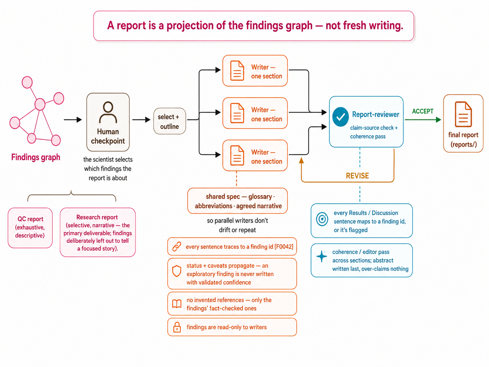

Reporting
The report-writing system
The scientist picks which findings the report covers; parallel writers each draft one section from a shared spec, and a report-reviewer checks that every sentence traces back to a finding id.

The scientist picks which findings the report covers; parallel writers each draft one section from a shared spec, and a report-reviewer checks that every sentence traces back to a finding id.
